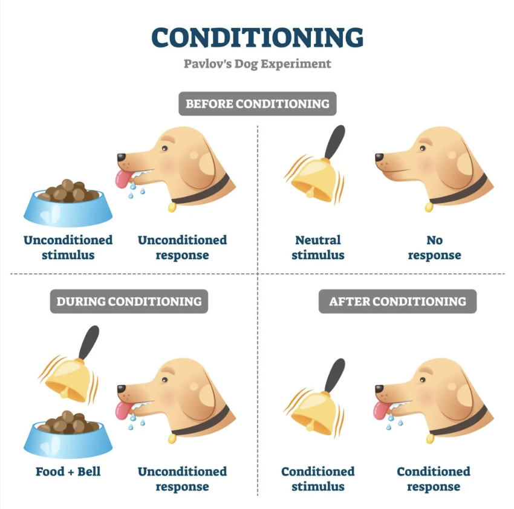

🔘 Saavedra & Silverman (2002)
案例研究：厌恶情绪与特定恐惧症——按钮恐惧症
1. Background — Classical Conditioning 背景：经典条件反射
1.0 The Psychology Being Investigated（研究涉及的心理学）
According to the CIE syllabus, the main psychology being investigated in Saavedra & Silverman (1976/2002) is evaluative learning, operant conditioning, classical conditioning and phobias. The case study sits at the intersection of three learning-approach ideas and one clinical phenomenon: (a) how a previously neutral stimulus — buttons — can come to elicit an aversive emotional response through classical conditioning in the form of evaluative learning (a learned change in liking/evaluation); (b) how operant conditioning (escape and avoidance reinforced by removal of the aversive stimulus) maintains a phobia once acquired; and (c) the clinical phenomenon of phobias as the end-product of those learning processes. （按 CIE 教学大纲，本研究主要涉及的心理学现象是评价性学习、操作性条件反射、经典条件反射与恐惧症。案例研究处于三个学习取向概念与一种临床现象的交叉：(a) 一个原本中性的刺激（纽扣）如何通过经典条件反射——以评价性学习（习得的好恶评价变化）的形式——引发厌恶情绪反应；(b) 操作性条件反射（逃避与回避被撤除厌恶刺激所强化）如何在恐惧症获得后维持它；(c) 恐惧症作为这些学习过程的最终产物。）
Evaluative learning is the learning-approach term for the change in liking of a stimulus that occurs when that stimulus is paired with an already-evaluated one (here, the trauma at age 5). Once the boy's buttons were paired with that trauma, the buttons themselves came to elicit disgust and avoidance — a conditioned emotional response. Classical conditioning therefore supplies the acquisition mechanism; operant conditioning supplies the maintenance mechanism (every successful avoidance is negatively reinforced by the reduction of anxiety); and phobia names the persistent, excessive fear that results. （评价性学习是学习取向的术语，指当一个刺激与一个已有评价的刺激（本研究中为 5 岁时的创伤事件）反复配对后，对该刺激好恶度的习得性改变。一旦男孩的"纽扣"与创伤配对，纽扣本身就引发了厌恶和回避——一种条件性情绪反应。经典条件反射因此提供"获得"机制；操作性条件反射提供"维持"机制（每一次成功回避都因焦虑降低而被负强化）；恐惧症则是这些过程导致的持久、过度的恐惧。）
Syllabus verbatim（CIE 教学大纲原文）
"Saavedra and Silverman (button phobia) is a case study of a young boy with a phobia of buttons and the use of classical conditioning to help reduce his fear and disgust. The main psychology being investigated was evaluative learning, operant conditioning, classical conditioning and phobias."
1.1 What is Classical Conditioning? 什么是经典条件反射？
Classical conditioning（经典条件反射） is a form of learning in which an unconditioned response becomes linked to a previously neutral stimulus to create a learned association. It was first investigated by Ivan Pavlov (1927), who observed dogs salivating in a laboratory as part of a totally different experiment.
Pavlov noticed that the dogs began to anticipate food when they saw researchers in the lab, before feeding times. He presented food alongside a range of neutral stimuli, such as bells, which created a learned association. Over several trials, when the dogs heard the bell (conditioned stimulus 条件刺激) they began to salivate (conditioned response 条件反应).
1.2 The Four Stages of Classical Conditioning 经典条件反射四阶段
| Stage 阶段 | Stimulus 刺激 | Response 反应 |
|---|---|---|
| 1. Before conditioning 条件反射建立前 | Unconditioned stimulus (food) 无条件刺激（食物） | Unconditioned response (salivation) 无条件反应（流口水） |
| 2. Before conditioning 条件反射建立前 | Neutral stimulus (bell ringing) 中性刺激（铃声） | No response 无反应 |
| 3. During conditioning 条件反射建立中 | Unconditioned stimulus (food) + Neutral stimulus (bell) 食物 + 铃声配对 | Unconditioned response (salivation) 无条件反应（流口水） |
| 4. After conditioning 条件反射建立后 | Conditioned stimulus (bell ringing) 条件刺激（铃声） | Conditioned response (salivation) 条件反应（流口水） |
1.3 Figure 4.6: Pavlov's Classical Conditioning Diagram 图4.6：巴甫洛夫经典条件反射图解

巴甫洛夫狗实验——经典条件反射四阶段
1.4 Key Terminology 经典条件反射核心术语
| Term 术语 | English Definition 英文定义 | Chinese Explanation 中文解释 |
|---|---|---|
| Unconditioned Stimulus (UCS) 无条件刺激 | A stimulus that naturally and automatically triggers a response without any learning needed. | 无需学习就能 自动引发反应 的刺激。例如：食物天然让狗流口水。 |
| Unconditioned Response (UCR) 无条件反应 | The unlearned, naturally occurring response to the unconditioned stimulus. | 对无条件刺激产生的 天生、未经过学习的反应。例如：看到食物就流口水。 |
| Neutral Stimulus (NS) 中性刺激 | A stimulus that initially does not trigger the response of interest; it is "neutral" before conditioning. | 最初 不会引发目标反应 的刺激。例如：铃声本身不会让狗流口水。 |
| Conditioned Stimulus (CS) 条件刺激 | Previously a neutral stimulus that, after association with the UCS, now triggers a conditioned response. | 原本是中性刺激，但与无条件刺激 反复配对后，现在能引发条件反应。例如：铃声 → 狗流口水。 |
| Conditioned Response (CR) 条件反应 | The learned response to the previously neutral stimulus (now the CS). It is similar but not identical to the UCR. | 对（原本中性的）条件刺激产生的 习得性反应。与无条件反应相似但通常稍弱。 |
| 🔑 核心公式：NS + UCS → (repeated pairing 反复配对) → NS becomes CS → triggers CR | ||
• UCS = 纽扣掉在身上（令人厌恶的事件）→ UCR = 厌恶/痛苦
• NS = 看到纽扣（原本中性）→ 经过反复负面配对 → 变成 CS（看到纽扣就触发厌恶 = CR）
🔑 KEY WORDS 核心术语
classical conditioning（经典条件反射）: learning through association. A previously neutral stimulus becomes linked to an unconditioned stimulus to produce a conditioned response.
phobia（恐惧症）: the irrational, persistent fear of an object or event that creates anxiety and poses little real danger but creates anxiety and avoidance in the sufferer.
evaluative learning（评估性学习）: a form of classical conditioning wherein attitudes towards stimuli are considered to be the product of complex thought processes and emotions, leading an individual to perceive or evaluate a previously neutral stimulus negatively. Attitudes acquired through evaluative learning may be harder to change than more superficial associations.
1.5 Phobias and Classical Conditioning 恐惧症与经典条件反射
Some psychologists believe that behaviours such as phobias（恐惧症） can also be learned (and unlearned) in the same way as any other type of behaviour. There are several subtypes of classical conditioning:
- Expectancy learning（预期学习）: a previously neutral or non-threatening object/event becomes associated with a potentially threatening outcome. The individual expects the negative consequence, so experiences fear in the presence of the previously non-threatening situation.
- Evaluative learning（评估性学习）: another type of classical conditioning in which an individual forms an association between a previously neutral stimulus and a negative emotion, but this is a negative evaluation — for example disgust, rather than fear.
This suggests that disgust, as well as fear, may be an appropriate target emotion for the treatment of phobias. In the case of phobias, an emotional response such as fear or anxiety becomes associated with a particular neutral stimulus, such as buttons.
1.6 Common Types of Specific Phobias 常见特定恐惧症类型
| Phobia Name 恐惧症名称 | Feared Object/Situation 恐惧对象 | Category 分类 |
|---|---|---|
| Arachnophobia 蜘蛛恐惧症 | Spiders 蜘蛛 | Animal 动物类 |
| Acrophobia 高处恐惧症 | Heights 高处 | Environmental 环境类 |
| Claustrophobia 幽闭恐惧症 | Confined spaces 狭窄空间 | Situational 情境类 |
| Agoraphobia 广场恐惧症 | Crowded/open spaces 人群/开放空间 | Situational 情境类 |
| Cynophobia 狗恐惧症 | Dogs 狗 | Animal 动物类 |
| Ophidiophobia 蛇恐惧症 | Snakes 蛇 | Animal 动物类 |
| Aerophobia 飞行恐惧症 | Flying 坐飞机 | Situational 情境类 |
| Hemophobia 血液恐惧症 | Blood 血液 | Bodily Injury 身体伤害类 |
| Dentophobia 牙医恐惧症 | Dentists 牙医 | Medical 医疗类 |
| Koumounophobia 🔘 按钮恐惧症（本研究） | Buttons 纽扣 | Other 其他类（罕见） |
💡 Button phobia (koumounophobia) is one of many specific phobias classified in psychiatry. It is extremely rare — this case study is one of the few documented treatments in the literature.（按钮恐惧症极为罕见——本案例研究是文献中少数记录的治疗案例之一。）
📋 Exam Key Points — Classical Conditioning
- Must Know Define classical conditioning as learning through association of a previously neutral stimulus with an unconditioned stimulus.
- Must Know Identify UCS / UCR / NS / CS / CR in any new example — including the Saavedra button-phobia case.
- Must Know Evaluative learning = classical conditioning where the conditioned response is a negative evaluation (disgust) rather than fear — may be harder to undo.
- Common Phobias are irrational, persistent fears that create anxiety and avoidance.
2. Background — Operant Conditioning & Research Context 背景：操作性条件反射与研究背景
2.1 Operant Conditioning as Another Explanation 另一种解释：操作性条件反射
Another form of conditioning is known as operant conditioning（操作性条件反射）. When a person or animal performs a new behaviour, this can become associated with a consequence. For example, receiving a sticker as a reward for allowing the dentist to perform a check-up makes it more likely a child might be happy to return for future check-ups.
In other words, rewards reinforce behaviour and make the behaviour more likely to be used again. Operant conditioning can also be used as an explanation for how people acquire phobias. When people avoid the object of their phobia this can reinforce future avoidance behaviours, because their anxiety is reduced when they haven't have encountered the thing they are afraid of. This reinforces or helps to maintain phobias once they have been learned.
Psychologists can use the reinforcement principle of operant conditioning to treat phobias as well. Praising or giving other rewards for remaining calm when approaching a phobic stimulus can reinforce more positive behaviours towards such stimuli.
2.2 Why Buttons? The Research Background 为什么研究按钮恐惧？
The study by Saavedra and Silverman focused on how phobias can be treated using the application of different theories of learning. These included operant conditioning to reinforce desirable behaviour. The researchers compared this treatment to evaluative learning as a form of classical conditioning to reduce feelings of disgust.
From their study of adults with a blood phobia, Hepburn and Page (1999) suggested that treating patients' disgust, as well as their fear, would help them to make progress. De Jong et al. (1997) worked with children who had a spider phobia. Although no attempt was made to manipulate feelings of disgust, their feelings of disgust declined alongside their reduction in fear.
🀄 本节中文总结
- 操作性条件反射：行为 → 后果 → 行为被强化（奖励）或削弱（惩罚）。可解释恐惧症的维持（回避减少了焦虑 → 回避行为被强化）
- Saavedra & Silverman 把操作性条件反射（正强化）与评估性学习（经典条件反射针对厌恶）做比较
- 前人证据：Hepburn & Page (1999) 血恐惧症、De Jong et al. (1997) 蜘蛛恐惧症 → 治疗恐惧时厌恶情绪也下降
- Phillips et al. (1998) 称厌恶为"精神病学被遗忘的情绪"——厌恶与恐惧一起导致回避，本研究聚焦厌恶
3. Aim 研究目标
研究目标是检验经典条件反射在恐惧和回避特定刺激中的作用。在这个按钮恐惧症的案例中，研究者想看看暴露疗法能否减少与按钮相关的厌恶和痛苦。
Research Questions 研究问题
- Can targeting disgust（厌恶） (not just fear) improve treatment outcomes for childhood specific phobias?
- Is evaluative learning（评估性学习） a useful framework for understanding why some phobias persist despite behavioural exposure?
- Which intervention works better: positive reinforcement therapy or imagery exposure therapy?
🀄 本节中文总结
- 核心 aim：检验经典条件反射 + 厌恶情绪在按钮恐惧症中的作用，看暴露疗法能否减少厌恶与痛苦
- 三个研究问题：(1) 针对厌恶而非仅恐惧能否改善儿童特定恐惧症？(2) 评估性学习能否解释为何有些恐惧症在行为暴露后仍持续？(3) 正强化 vs 意象暴露哪种更有效？
4. Method — Case Study 方法：案例研究
4.1 Research Method and Design 研究方法与设计
This was a clinical case study（案例研究） as it involved just one participant whose life history and treatment were studied in depth. Data was collected using self-report measures. Both the boy and his mother were interviewed by the researchers about the onset of his subsequent behaviour. The boy was observed throughout the treatment sessions to see if his phobic behaviour showed any improvement. The results of the treatment were measured using a nine-point scale of distress known as the 'Feelings Thermometer'（情感温度计）.
🔑 RESEARCH METHODS
A case study（案例研究） involves studying one or a very small number of participants (such as a family unit) in great depth. It is particularly suitable in researching phenomena that are unusual or rare. Case studies often collect a large amount of qualitative data; this is often the main reason they are chosen as a method. In this study, interviews produced a history of the boy's experience with buttons and helped researchers understand the origin of his phobia.
4.2 Why Case Study? 为什么使用案例研究？
- Button phobia is extremely rare — a controlled trial with many participants is impractical.
- The researchers wanted rich, in-depth qualitative data about the origin and development of the phobia over time.
- A case study allows multiple methods of data collection (interviews, observation, self-report) to be combined.
- Because there is only one participant, individual psychological changes during treatment can be tracked in detail.
🀄 本节中文总结
- 方法 = 临床案例研究（n = 1），深度研究单一被试的生活史与治疗
- 数据收集 = 自我报告量表 + 男孩与母亲的访谈 + 治疗过程中的行为观察
- 测量工具 = Feelings Thermometer（情感温度计）——0–8 的 9 级痛苦量表
- 案例研究适合罕见现象（如按钮恐惧症）+ 可产生大量定性数据
5. Sample & Procedure 样本与程序
5.1 Sample 样本
The participant was a 9-year-old Hispanic American boy. Along with his mother, he had sought support from the Child Anxiety and Phobia Program at Florida International University, Miami. He met the criteria for having a specific phobia of buttons and had been experiencing symptoms for around four years prior to the start of the study.
5.2 Origin of the Phobia 恐惧症的起源

The phobia had begun at age five, when he was in kindergarten during an art project that involved buttons. He described the situation in which he ran out of buttons to paste on his posterboard and was asked to come to the front of his class and teacher. He found a bowl of buttons on his teacher's desk. When he reached for the bowl, his hand slipped and all the buttons in the bowl fell on him. He described this experience as distressing, and from that time onwards his aversion to buttons steadily increased.
When interviewed, the phobia was interfering significantly with his normal functioning: he could no longer dress himself and had become preoccupied with avoiding touching himself or clothing that could have touched buttons.
5.3 Procedure — Creating the Hierarchy 程序——建立恐惧层级
It was necessary for the researchers to understand the boy's specific feelings towards buttons prior to starting treatment. Through discussion with the participant, they created a hierarchy of feared stimuli, with each item on the list provoking increasing fear. Table 4.5 shows the most difficult items for the child were small, clear plastic buttons. These were rated at an "8" on the nine-point Feelings Thermometer. Handling these or touching someone wearing them was the most unpleasant task for the boy.
Table 4.5: Hierarchy of Fear/Disgust 恐惧/厌恶层级表
| # | Stimuli 刺激物 | Distress rating (0–8) 痛苦评分 |
|---|---|---|
| 1 | Large denim jean buttons 大号牛仔布纽扣 | 2 |
| 2 | Small denim jean buttons 小号牛仔布纽扣 | 3 |
| 3 | Clip-on denim jean buttons 牛仔夹式纽扣 | 3 |
| 4 | Large plastic buttons (coloured) 大号彩色塑料纽扣 | 4 |
| 5 | Large plastic buttons (clear) 大号透明塑料纽扣 | 4 |
| 6 | Hugging Mom when she wears large plastic buttons 妈妈穿大塑料纽扣衣服时拥抱她 | 5 |
| 7 | Medium plastic buttons (coloured) 中号彩色塑料纽扣 | 5 |
| 8 | Medium plastic buttons (clear) 中号透明塑料纽扣 | 6 |
| 9 | Hugging Mom when she wears regular medium plastic buttons 妈妈穿普通中号塑料纽扣时拥抱 | 7 |
| 10 | Small plastic buttons (coloured) 小号彩色塑料纽扣 | 8 |
| 11 | Small plastic buttons (clear) ⭐ 小号透明塑料纽扣（最难） | 8 |
5.4 Intervention 1: Positive Reinforcement Therapy 干预一：正强化疗法
The boy was treated with two interventions, one after the other. The first was contingency management（权变管理）, a form of positive reinforcement therapy. This was a behaviour-focused approach which meant the boy was rewarded for showing less fear and for actually handling the buttons. The positive reinforcement was given to the boy by his mother only after he had completed a gradual exposure to buttons. These treatment sessions lasted between 20 and 30 minutes.
Researchers observed how the boy approached the buttons (e.g., whether the numbers of buttons he handled increased). They also measured his subjective rating of distress (on a 9-point scale) using the Feelings Thermometer.
🔑 KEY WORDS
imagery exposure therapy（意象暴露疗法）: therapy in which the person is asked to vividly imagine their feared object, situation or activity.
self-control（自我控制）: a form of cognitive-behavioural therapy. It involves using 'self-talk'; the individual is taught to recognise difficult situations, acknowledge troubling thoughts and consider alternative, positive thoughts.
5.5 Intervention 2: Imagery Exposure Therapy 干预二：意象暴露疗法
The second form of therapy, and the main focus of the study, was known as imagery exposure therapy（意象暴露疗法）. Interviews with the boy had revealed that he found touching his body disgusting, and he also believed that buttons smelt unpleasant. These ideas formed the basis for disgust imagery exercises.
Unlike in vivo exposure (where the individual actually physically handles or is exposed to fearful stimuli), imagery exposure therapy uses visualisation techniques. Disgust-related imagery exposures were incorporated with cognitive self-control strategies（自我控制策略）.
The boy was asked to imagine buttons falling on him, and to consider how they looked, felt and smelled. He was also asked to talk about how these imagery exposures made him feel. The exposures progressed from images of larger to smaller buttons, in line with the boy's fear hierarchy. At each session, self-report measures were taken of the boy's subjective ratings of distress using the Feelings Thermometer.
🀄 本节中文总结
- 样本：9 岁西班牙裔美国男孩，由母亲陪同到迈阿密佛罗里达国际大学儿童焦虑与恐惧项目求助，病程 4 年
- 起源：5 岁时整碗纽扣洒在身上（创伤性 UCS），之后回避日益严重——不能自己穿衣，避免触碰自己或可能接触纽扣的衣物
- 恐惧层级（Table 4.5）：11 项刺激物，从大牛仔扣（评分 2）到小透明塑料扣（评分 8，最难）
- 母亲角色：作为正强化提供者 + 治疗共同执行者，每次暴露完成后由母亲奖励
- 干预 1：正强化（权变管理）—— 行为导向，每次 20–30 分钟
- 干预 2：意象暴露疗法 + 自我控制策略 —— 让男孩想象纽扣落在他身上的视觉/触觉/嗅觉体验
6. Results — Positive Reinforcement Therapy 结果：正强化疗法（意外发现）
6.1 Unexpected Result 出乎意料的结果
The outcome of the first intervention, positive reinforcement therapy, was a successful completion of all the exposure tasks listed in the hierarchy of fear. The boy was also observed approaching the buttons more positively. One example of this was that he started handling larger numbers of buttons during later sessions.
However, his subjective ratings of distress increased significantly between sessions two and three, and continued to rise (see Figure 4.7 below). By session four, a number of items on the hierarchy such as hugging his mother while she was wearing buttons had increased in dislike from the original scores.
Key finding: Despite his behaviour towards the fearful stimuli improving, his feelings of disgust, fear and anxiety actually increased as a result of the positive reinforcement therapy. This finding is consistent with previous research into evaluative learning: despite repeated exposure to the phobic object, evaluative reactions (i.e. disgust 厌恶) remain unchanged or even increase.
6.2 Figure 4.7: Distress Ratings During Positive Reinforcement 图4.7：正强化期间的痛苦评分
Figure 4.7: Ratings of distress during positive reinforcement therapy — note how distress INCREASED despite behavioural improvement
正强化治疗期间的痛苦评分——注意尽管行为改善，痛苦反而上升了
⚠️ Critical Finding 关键发现
So, while the participant was showing improved behaviour, the level of fear and disgust he was experiencing from this intervention worsened. This supports the evaluative learning（评估性学习） framework: behavioural exposure alone does not address the underlying emotional evaluation (disgust) associated with the phobic stimulus.
🀄 本节中文总结
- 正强化疗法的结果：行为成功（完成所有层级 + 处理按钮数增多），但痛苦评分反而上升——一个意外的反直觉发现
- 说明单纯行为暴露不能改变情绪/认知层面的厌恶反应——支持评估性学习框架
- 这是论文最重要、最反直觉的发现：行为改善 ≠ 主观痛苦改善
7. Results — Imagery Exposure Therapy & Follow-up 结果：意象暴露疗法与随访
7.1 Imagery Exposure Therapy — Success! 意象暴露疗法——成功！
The second intervention, imagery exposure therapy, appeared to be successful in reducing the boy's rating of distress. One example of this is shown in Figure 4.8 below, relating to imagery of "hundreds of buttons falling all over his body". Before imagery exposure, the boy rated this experience as the most fearful and disgusting (score of 8 on the Feelings Thermometer). This reduced to 5 midway through the exposure, and just 3 after the exposure was complete.
7.2 Figure 4.8: Distress Ratings During Imagery Exposure 图4.8：意象暴露期间的痛苦评分
Figure 4.8: Ratings of distress during imagery exposure therapy — distress DECREASED from 8 → 5 → 3
意象暴露治疗期间的痛苦评分——从 8 降到 5 再降到 3
7.3 Follow-up Results 随访结果
Following his treatment, six-month and 12-month follow-ups were conducted. At these assessment sessions, the boy reported feeling minimal distress about buttons. He also no longer met the diagnostic criteria for a specific phobia of buttons. His feelings towards buttons no longer affected his normal functioning; he was able to wear small, clear plastic buttons on his school uniform on a daily basis.
📋 Exam Key Points — Results
- Must Know Intervention 1 (positive reinforcement): behaviour improved, but distress ratings increased — supports evaluative learning.
- Must Know Intervention 2 (imagery exposure + self-control): distress for "hundreds of buttons falling on body" went from 8 → 5 → 3; for "hugging Mom with shirt full of buttons" from 7 → 4 → 3.
- Must Know Follow-up: 6-month and 12-month assessments — no longer met DSM criteria; able to wear small clear buttons daily.
- Common The contrast between the two interventions is the key result: behaviour ≠ emotional evaluation.
🀄 本节中文总结
- 意象暴露疗法有效：想象"数百纽扣掉在身上"的痛苦从 8→5→3；想象"抱穿纽扣衣的妈妈"从 7→4→3
- 随访 6 个月和 12 个月：男孩报告对按钮几乎无痛苦，不再符合 DSM-IV 特定恐惧症诊断；可日常穿带小透明塑料纽扣的校服
- 结论：意象暴露 + 自我控制策略成功降低了厌恶情绪，且效果长期维持
8. Conclusion 结论
The researchers concluded that the positive reinforcement therapy was successful in changing observable behaviour, and the imagery exposure therapy was successful in reducing feelings of fear and disgust. In particular they argue that:
- Emotions and cognitions relating to disgust are important when learning new responses to phobic stimuli. 与厌恶相关的情绪和认知在学习对恐惧刺激的新反应时非常重要。
- Imagery exposure can have a long-term effect on reducing the distress associated with specific phobias as it tackles negative evaluations. 意象暴露可以对减少特定恐惧症的痛苦产生长期效果，因为它针对的是负面评估。
9. Strengths & Weaknesses 优势与不足
✅ Strengths 优势
The case study was highly valid; the participant was studied over a period of time, using several different methods of data collection. The researchers used standardised measures such as the Feelings Thermometer before, during and after therapy. Collecting and analysing quantitative data means the researchers could compare the phobic reactions of the boy at the start and end of his treatment to assess any improvement.
A substantial amount of qualitative data（定性数据） was also gathered about the boy. An example of this was the background information obtained by interviewing the boy and his mother about the button incident at school. This type of data is useful because it can help us to understand the reasons underlying psychological disorders.
The participant created his own hierarchy of fear and disgust relating to his button phobia. He also gave personal ratings which were highly individual to his own thoughts and feelings. However, the aim of this study was to understand the experience of evaluative learning in an individual with specific phobia; these measures were appropriate. A scale created by the researchers for use with all phobic patients would not have been as relevant or informative about personal progress.
The 6-month and 12-month follow-ups provide strong evidence for durability of treatment effects. The boy no longer met DSM criteria for specific phobia and was able to wear small clear plastic buttons daily — a meaningful real-world outcome.
❌ Weaknesses 不足
This piece of research involved a case study. This means that the sample is small (in this case, one person). Like the sample of research by Fagen et al. discussed in Section 4.2, using a small sample in psychological study can make it difficult to generalise（推广） the results to a larger population. As the participant was diagnosed with a specific phobia of buttons, it makes the case even less likely to be representative of the general population.
Button phobias are extremely rare. The findings from studying one boy with a highly unusual phobia cannot be generalised to more common phobias (e.g., spiders, heights, blood). It is also unclear whether disgust imagery would work for phobias where the dominant emotion is fear rather than disgust.
The boy was fully aware he was undergoing therapy with the intention of improving his phobic symptoms. This might have affected the ratings he gave to the different levels of exposure therapy. The mother's ratings may also have been influenced by her desire to see her son improve. In addition, working on a case study involves building rapport with the participant — there is less room for anonymity or objectivity, increasing the risk of researcher bias.
Because this is a case study with n = 1, there is no control group or counterbalancing. We cannot tell whether improvements would have occurred naturally over time, or whether the order of interventions (reinforcement first, imagery second) mattered — perhaps imagery alone would have been sufficient from the start.
📋 Exam Key Points — Evaluation (AO3)
- Must Know [Generalisability] Weakness: n = 1 + rare button phobia → cannot generalise to wider population or more common phobias.
- Must Know [Types of data] Strength: rich qualitative interviews + Feelings Thermometer quantitative measure.
- Common [Bias] Weakness: participant knew he was being treated → demand characteristics; mother wanted her son to improve.
- Common [Validity] Strength: high ecological validity (real therapy, real client); 12-month follow-up shows durability.
- Common [Application] Strength: first study to show importance of targeting disgust in childhood phobias.
🀄 本节中文总结
- 优势：(1) 高生态效度 + 纵向研究（治疗前后 + 6/12 个月随访）；(2) 丰富定性数据（访谈）；(3) 对评估性学习的洞察；(4) 治疗效果长期维持
- 不足：(1) n = 1 难以推广；(2) 按钮恐惧症罕见不能代表其他恐惧症；(3) 研究者偏差与被试需求特征（男孩知道自己被治疗）；(4) 无控制组，无法排除时间/顺序效应
10. Ethical Issues 伦理问题
10.1 Ethical Strengths 伦理优点
- Informed consent（知情同意）: The boy and his mother both provided informed consent to participate in the study.
- Beneficial aim（有益目的）: The aim was to improve the boy's quality of life and minimise psychological distress, which is more ethical than trying to create phobias in participants and then attempting to treat them.
- Anonymity preserved（保护匿名）: The boy's anonymity was preserved, which allowed him to maintain his privacy.
- Right to withdraw（退出权利）: The boy was a willing participant who sought help for his condition.
10.2 Ethical Considerations 伦理考量
- Children as participants（儿童参与者）: When using children as participants, ethical issues can be a major concern. In this instance, the boy and his mother gave informed consent. This was important as the therapy involved deliberate exposure to distressing stimuli whether real or imagined.
- Temporary distress（暂时痛苦）: The boy could be considered vulnerable as his specific phobia is a recognised mental health condition. The intention of the researchers was to treat his phobia and improve his quality of life, which was to justify the temporary distress caused during treatment.
- Parental consent vs child consent（父母同意 vs 儿童同意）: Ethical guidelines typically suggest that parents' or guardians' consent should be obtained in addition to the child's own.
10.3 Comparison Table: Little Albert vs. Saavedra & Silverman 小阿尔伯特 vs 本研究的伦理对比
| Aspect 方面 | Little Albert (Watson & Rayner, 1920) | Saavedra & Silverman (2002) |
|---|---|---|
| Participant age | 9-month-old infant（9个月婴儿） | 9-year-old boy（9岁男孩） |
| Consent 同意 | No consent (mother unaware of full procedure) 无知情同意 | Informed consent from boy AND mother 双方知情同意 |
| Purpose 目的 | To CREATE a phobia (induce fear) 制造恐惧症 | To TREAT an existing phobia 治疗已有恐惧症 |
| Harm caused 造成伤害 | Deliberately induced lasting fear 故意造成持久恐惧 | Temporary distress for long-term benefit 短期痛苦换取长期改善 |
| Right to withdraw 退出权 | Not possible (infant cannot object) 不可能（婴儿无法拒绝） | Participant sought help voluntarily 参与者主动求助 |
| Anonymity 匿名 | Identity known ("Little Albert") 身份已知 | Anonymity preserved 匿名得到保护 |
| Debriefing 事后说明 | No debriefing; phobia not removed 无事后说明；恐惧未被消除 | Full follow-up at 6 & 12 months 完整随访6个月和12个月 |
🀄 本节中文总结
- 伦理优点：双方知情同意、有益目的（治疗而非制造）、匿名保护、参与者主动求助
- 伦理考量：儿童被试需双方同意（男孩 + 母亲）、暂时性痛苦需以长期改善为正当理由
- Little Albert 对比：Saavedra 在 7 个维度上都更符合现代伦理——更知情、有益、有事后说明（随访）
11. Issues & Debates 议题与辩论
11.1 Nature vs Nurture 先天 vs 后天
🧬 Nature 先天论点
- The boy's individual sensitivity to disgust may have a biological basis — some individuals are naturally higher in disgust sensitivity（厌恶敏感度）.
- Age-related factors: younger children may be more biologically predisposed to forming strong emotional associations through classical conditioning.
- Sex-typed behaviour differences in Bandura's study could partly be explained by hormones on brain development (nature).
🌱 Nurture 后天论点
- The theory underlying the acquisition and treatment of phobias in the study by Saavedra and Silverman is classical conditioning. Classical conditioning relies solely on a nurture-based explanation of learning. Phobias are not considered to be innate or genetically inherited. Instead, they are considered to be products of negative experiences with previously neutral stimuli.
- The boy's phobia began with a specific traumatic incident (buttons falling on him at age 5) — a clear environmental/nurture trigger.
- Treatment based on the same principles — subsequent neutral or positive experiences with the phobic stimulus (along with cognitive therapy) can reduce fearful responses.
11.2 Individual and Situational Explanations 个体与情境解释
The individual and situational explanations debate considers whether behaviour is best explained by characteristics of the person (individual explanations) or by circumstances and experiences (situational explanations).
In the context of Saavedra & Silverman: The phobia was acquired through a situational event — the negative experience of buttons falling on the boy when he was aged 5 (and subsequent encounters with buttons on his mother's and grandmother's clothes, and on his school uniform). However, individual factors also mattered: not every child who has an unpleasant experience with an object develops a phobia, and the boy's particular disgust sensitivity, together with his cognitive ability to engage in imagery exercises and self-talk, was crucial both to the persistence of the fear and to the success of his treatment.
11.3 Use of Children in Psychological Research 儿童在心理学研究中的使用
The children used in Bandura's study did not appear to have been given the opportunity to consent to the study, or to withdraw. Since children are particularly vulnerable, the study had the potential to cause distress, which is an ethical concern.
In Saavedra & Silverman's study: The child participant (aged nine) was asked for consent. In accordance with ethical guidelines, his mother also consented to his participation. This study was potentially highly distressing, as it involved both real and imagined exposure to frightening stimuli. Furthermore, the boy could be considered vulnerable as his specific phobia is a recognised mental health condition. The intention of the researchers was to treat his phobia and improve his quality of life, which was to justify the temporary distress caused during treatment.
11.4 Application of Psychology to Everyday Life 心理学在日常生活中的应用
For Saavedra & Silverman's study: The research shows how therapy based on the principles of classical conditioning can be used to treat specific phobias. A phobia is a distressing mental health condition that can negatively affect people's quality of life. Methods such as disgust imagery exposure are used in clinical practice to challenge the fearful associations with phobic stimuli. This piece of research demonstrates the potential long-term improvement that can result from exposure therapies.
🀄 本节中文总结
- Nature vs Nurture：Saavedra 明显支持 Nurture（后天）——恐惧症起源于环境创伤事件，治疗方法也基于学习原理
- Individual vs Situational：男孩的个体特征（厌恶敏感度、想象能力）在治疗结果中起关键作用
- 使用儿童：双方知情同意 + 暂时痛苦换长期治疗效益
- 应用：厌恶意象暴露可用于临床治疗各种特定恐惧症——针对厌恶情绪而非仅恐惧
Summary
Quick RecapThis section consolidates the key findings of Saavedra & Silverman (2002) for revision purposes. Refer back to this table in the days leading up to your CIE exam.
12.1 Quick Recap Table
| Aspect | Detail |
|---|---|
| Study authors & year | Saavedra & Silverman (2002) |
| Aim | To investigate whether a behaviourally-focused treatment (positive reinforcement) or an imagery-focused treatment (participant-modelled imagery exposure) was more effective in reducing a child's specific phobia of buttons |
| Method | Single case study (quasi-experiment, AB design) |
| Sample | One 9-year-old Hispanic American boy with koumounophobia |
| Procedure | Two phases of treatment, plus pre-treatment hierarchy construction |
| Treatment 1 | Positive reinforcement (operant) — 6 sessions, no change in disgust rating |
| Treatment 2 | Participant-modelled imagery exposure — 8 sessions, dramatic reductions |
| Outcome measure | Feelings Thermometer (0–8 self-report scale) + behavioural avoidance tests |
| Key result | Disgust rating dropped from 8 → 5 → 3 across imagery sessions; boy could wear shorts with zippers; mother (co-therapist) reported he was less avoidant |
| Follow-up | 6- and 12-month follow-ups showed gains maintained |
| Conclusion | Imagery exposure is more effective than positive reinforcement alone for treating specific phobias involving disgust. Disgust must be targeted in treatment, not just fear. |
| Theoretical link | Classical conditioning (Pavlov) + operant conditioning + evaluative learning theory |
| Key strength | Detailed, in-depth data (high ecological validity) from a real clinical setting |
| Key weakness | Cannot generalise from one child; no control over extraneous variables (no control group) |
| Ethical concern | Single boy gave consent but was a minor; distress during exposure |
12.2 One-Sentence Memory Hook
Saavedra & Silverman (2002) showed that a single Hispanic boy's button phobia — rooted in classical conditioning and evaluative learning — responded dramatically to imagery exposure (8→5→3) but not to positive reinforcement, demonstrating that disgust must be the target of therapy for specific phobias.
🀄 本节中文总结
- 整体框架：实验设计 (AB case study) + 单一被试 + 两种治疗对比 + Feelings Thermometer 量化 + 6/12 个月追踪
- 核心结论：意象暴露对厌恶驱动的特定恐惧症远优于正强化
- 考试必背：8 → 5 → 3 三次数字、9 岁男孩、6 次强化无变化 + 8 次意象下降、母亲参与
Key Terms & Study Questions
Vocabulary13.1 Key Terminology (24 Terms)
| Term | Definition |
|---|---|
| Classical conditioning | Learning process in which a neutral stimulus becomes associated with an unconditioned stimulus to elicit a conditioned response (Pavlov) |
| UCS | Unconditioned Stimulus — naturally elicits a response without learning (e.g., pain) |
| UCR | Unconditioned Response — unlearned response to the UCS |
| NS | Neutral Stimulus — produces no response before conditioning |
| CS | Conditioned Stimulus — previously neutral, now triggers a response |
| CR | Conditioned Response — learned response to the CS |
| Specific phobia | An excessive or unreasonable fear of a specific object or situation (DSM-5) |
| Koumounophobia | Specific phobia of buttons |
| Disgust | An emotional response to a stimulus perceived as repulsive or contaminating (distinct from fear) |
| Evaluative learning | Learning in which a neutral stimulus acquires a positive or negative affective value through pairing |
| Operant conditioning | Learning through consequences (rewards/punishments) — Skinner |
| Positive reinforcement | Adding a desirable stimulus to increase behaviour |
| Modelling | Learning by observing another person (live or symbolic) perform a behaviour |
| Participant modelling | Variant where the participant performs the feared behaviour after watching a model |
| Imagery exposure | Exposure therapy using vivid mental imagery rather than in-vivo exposure |
| Flooding | Massed exposure to the feared stimulus at full intensity |
| Systematic desensitisation | Gradual, hierarchical exposure paired with relaxation |
| Case study | In-depth investigation of a single individual or small group |
| AB design | Single-case design comparing baseline (A) to intervention (B) |
| Quasi-experiment | Experiment lacking random allocation to conditions |
| Behavioural avoidance test (BAT) | Standardised measure of avoidance behaviour toward the feared stimulus |
| Feelings Thermometer | 0–8 self-report scale for distress/disgust intensity |
| Co-therapist | A second person (often a parent) who supports therapy delivery |
| Follow-up | Post-treatment assessment to check maintenance of gains |
13.2 Study Questions (12 Short-Answer Prompts)
- Outline the UCS–CS pairing that may have led to the boy's button phobia.
- Distinguish between fear and disgust as components of the boy's phobia.
- Describe the positive reinforcement phase in 3 steps.
- Describe the imagery exposure phase in 3 steps.
- Why was the Feelings Thermometer a useful measure?
- Explain evaluative learning as it applies to this case.
- What was the role of the mother in the study?
- Outline two strengths and two weaknesses of using a case study.
- Compare the ethical issues with those of Watson & Rayner's Little Albert study.
- Discuss one issue or debate (e.g., Nature vs Nurture) raised by the study.
- Why might the imagery condition have worked but not the reinforcement condition?
- Discuss generalisability — what can we conclude about treating other children's phobias?
🀄 本节中文总结
- 24 个术语：分为学习理论 / 恐惧症 / 治疗方法 / 实验设计 四大类
- 12 道简答题：每题 2-4 分，CIE Paper 1 风格，复习时尝试不看书完整作答
- 考试场景：术语题出现在 Section A (1 mark definitions)；简答题出现在 Section B (2-4 marks)
Exam Practice
Past Paper StyleFive CIE-style questions below. Each is followed by a model answer. Question 5 is a 10-mark extended-response essay. Time yourself: 1 minute per mark.
Q1 (2 marks). Identify two features of a case study as a research method. [CIE 9698/21 Oct/Nov 2017 style]
Model answer
- It involves detailed study of an individual (or small group), often using multiple methods (e.g., interview + observation + self-report).
- It is conducted in depth over a relatively long period in the participant's natural setting (high ecological validity).
Q2 (4 marks). Describe the procedure used in the positive reinforcement phase of Saavedra & Silverman's study. [CIE adapted]
Model answer
- The boy was rewarded with a token (e.g., a poker chip) every time he successfully approached or remained near a button during graded, in-vivo exposure tasks.
- Treats were given by the experimenter and the mother for non-avoidant behaviour, and tokens could later be exchanged for toys/rewards.
- Tasks progressed from mildly aversive (e.g., touching a button) to more aversive (e.g., playing with buttons) over six sessions.
- The Feelings Thermometer was used to rate distress/disgust before and after each task; results showed little change.
Q3 (4 marks). Outline what evaluative learning theory would predict about how the boy acquired his button phobia. [CIE adapted]
Model answer
- According to evaluative learning, neutral stimuli (NS — buttons) can acquire a negative evaluative (affective) value through pairing with a strongly negative event (UCS — pain/distress).
- In Saavedra's case, when the 5-year-old boy choked on a button and experienced pain and fear, the buttons became associated with these negative feelings.
- Over repeated pairings, the buttons (now CS) directly elicited disgust (CR) without the original choking event being present.
- The disgust was a learned evaluation of the stimulus (an attitude-like response), not just a reflexive fear, which is why targeting disgust directly in therapy was effective.
Q4 (8 marks). Evaluate the use of a case study to investigate the effectiveness of treatments for specific phobias in children. Refer to Saavedra & Silverman (2002) in your answer. [CIE 9698/22 style]
Model answer (mark scheme: AO1 4 marks + AO3 4 marks)
AO1 — Knowledge & application (4 marks)
- Saavedra & Silverman (2002) used a single case study (AB design) to compare positive reinforcement vs participant-modelled imagery exposure for treating a 9-year-old Hispanic American boy's button phobia (koumounophobia).
- Detailed pre-treatment hierarchy construction (11 levels, Table 4.5) and Feelings Thermometer self-report (0–8) were used.
- Imagery exposure reduced disgust from 8 → 5 → 3 across sessions; positive reinforcement produced no measurable change in six sessions.
- 6- and 12-month follow-ups confirmed maintenance of gains.
AO3 — Evaluation (4 marks)
- Strength — detailed, in-depth data: case studies permit rich qualitative and quantitative data (Feelings Thermometer + behavioural avoidance + mother interview), increasing internal validity of the within-subject comparison.
- Strength — ecologically valid: conducted in a clinical setting, so real-world generalisability to clinical practice is high (though statistical generalisability is low).
- Weakness — cannot generalise: findings from a single 9-year-old Hispanic boy cannot be extrapolated to all children with specific phobias; cultural, developmental and individual differences (e.g., disgust sensitivity, imagery ability) matter.
- Weakness — no control of extraneous variables: without a control group or counterbalancing, demand characteristics, maturation, or the mother-as-co-therapist effect could explain the improvement rather than the imagery intervention itself.
Q5 (10 marks — extended essay). Practice question: Discuss the strengths and weaknesses of the case study as a research method in psychology. Refer to Saavedra & Silverman (2002) in your answer and use one other CIE core study you have studied that uses a case study. [CIE 9698/22 Paper 2 style]
Plan + sample paragraphs (full mark-scheme style)
Plan (≈1 min): Strengths → depth / ecological validity / unusual-population access / generating hypotheses. Weaknesses → generalisability / objectivity / replication / ethical concerns. Use Saavedra (2002) + one other case study (e.g., Freud's Little Hans, Thigpen & Cleckley's Eve White/Black, or another CIE choice).
Suggested structure (≈12 minutes):
- Intro (1 mark): define case study and link to Saavedra + chosen second study.
- Strength 1 (2 marks): depth & detail — Saavedra produced rich, longitudinal data including hierarchy construction, multi-session ratings and 12-month follow-up.
- Strength 2 (2 marks): ecological validity / real-world insight — conducted in a clinical setting with a real child suffering a real phobia; findings translate directly to clinical practice.
- Strength 3 (1 mark): hypothesis generation — case studies can generate ideas for controlled research.
- Weakness 1 (2 marks): generalisability — single Hispanic boy cannot represent all children with phobias; imagery ability, disgust sensitivity and culture vary.
- Weakness 2 (1 mark): objectivity — researcher bias in interpretation; subjective Feelings Thermometer ratings.
- Weakness 3 (1 mark): replication — cannot easily replicate a single case.
AO1 (5 marks): accurate description of Saavedra's design (single case, AB, Feelings Thermometer) plus accurate description of the second chosen study.
AO3 (5 marks): balanced, elaborated evaluation with appropriate terminology; comments explicitly on issues of generalisability, objectivity, and application to clinical practice.
Top-band mark schemes require: both studies integrated (not separate halves), explicit methodological terminology (AB design, ecological validity, demand characteristics), and a brief conclusion weighing strengths against weaknesses.
🀄 本节中文总结
- 5 道真题风格题：2 + 4 + 4 + 8 + 10 分，覆盖 AO1 描述 + AO3 评价
- 常考点：case study 优缺点（Q4/Q5）、evaluative learning（Q3）、procedure 描述（Q2）、method 特征（Q1）
- 10 分大作文：必须结合两个 CIE 核心研究，不能只写一个；每点 1 分或 2 分对应标记数